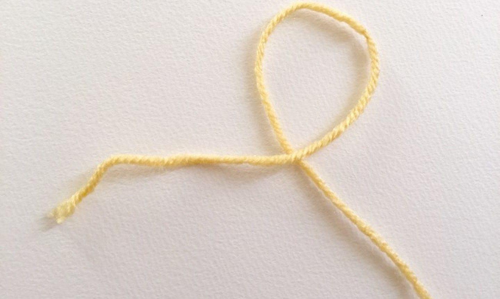
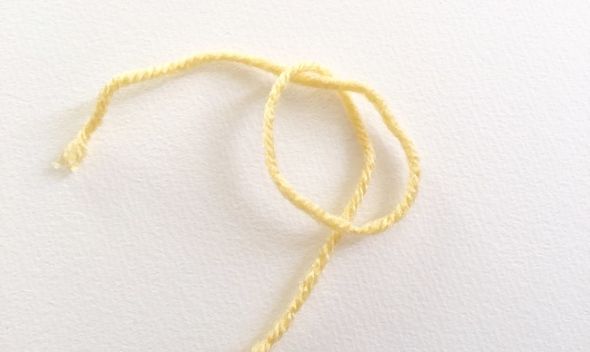
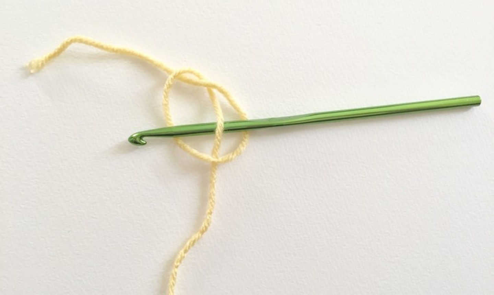
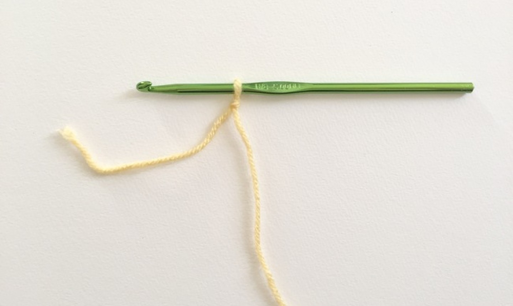

If you’ve been perusing crochet boards on Pinterest
and had a jonesing to start the craft, you’ve come
to the right place. We’re going to crush your first
crochet lesson. Even if you’ve never held a
hook before or don’t know a slip knot from a single
crochet, this guide will help you pick up basic
techniques and tips. Soon enough you’ll be ready to
crochet in rows, which is all you need to make a
scarf or even a simple blanket.
Let’s get started!
First, Nab the Right Tools
There’s a whole world of yarns and hooks out there, but some are better for beginners. The main goal is to get materials that you find easy to work with. When starting out, keep these things top of mind.
Choose a Mid-Weight Yarn
Worsted weight yarn (#4) is the best option when you’re a newbie.
Go for Good Stitch Definition
It’ll make it easier to see your stitches when you work. A simple acrylic , wool or cotton yarn is a good choice. (For now, steer clear of fuzzy or fancy yarn.)
Pick Light Colors
Dark or multicolored yarn can make it harder to know where to insert the hook as you crochet, so your first few projects are likely to feel easier in a lighter hue. Once you’re crushing it, you can opt for any shade you want.
Match Your Crochet Hook to Your Yarn Weight
Yarn labels often suggest a hook size, so keep an eye out when shopping. In general, size G/4.25 mm and size J/6 mm are good starter hooks.
Start With a Slip Knot
Everything you crochet begins with a slip knot on the hook, so learning this simple knot is step one on your road to success.
-

- Make a loop with your yarn, then bring the tail of the yarn over the working yarn. The tail should be 4″ to 6″ long after it crosses the body of the yarn. 
- Create a pretzel shape (see above) with the loop. Press your left finger where the yarn tail crosses the working yarn. Then use your right hand to bring the loop down over the working yarn. (In reality, you’re just flipping the loop upside down.) 
- Insert the crochet hook from the right to the left over the working yarn, going through the loop. It should go over the right side of the ,” under the working yarn, then over the left side of the “pretzel.” 
- Pull down to tighten the yarn around the hook. Lift the hook up and lightly on the tail end and working yarn to tighten it. You just made your first slip knot. (Way to go!)